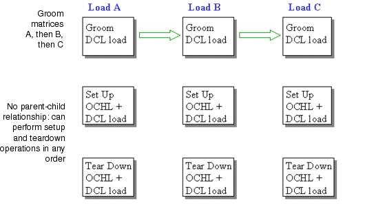
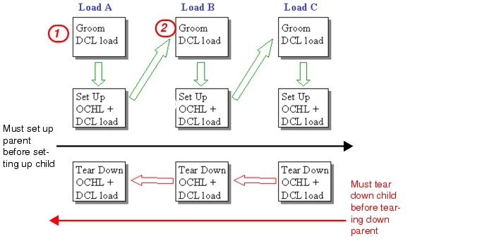

Grooming DCL to OCH Traffic > Grooming Multiple DCL Matrices > Grooming Sequentially
Grooming Sequentially
You can groom multiple traffic matrices (or sets of traffic matrices) sequentially by performing the grooming action multiple times. This allows you to use different settings, such as optimization or protection, for these different traffic matrices. One important effect is the possible reuse of resources in the DCL layer. These resources take the form of unused capacity from an OCH matrix that is already accommodated in the network. There are two possible reasons why this capacity is unused:
- The capacity of a previously set up (non-native) OCH matrix is trailed to the DCL layer and can be used to accommodate DCL traffic.
- The capacity is a result of a previous grooming operation. Upon setup of the OCH matrix, the DCL trunks are created and DCL traffic is accommodated on the trunks. In general, the DCL trunks are not fully utilized (utilization is less than 100 percent); as a result, these trunks have unused capacity.
The grooming algorithm considers this and reuses any unused DCL capacity. The grooming algorithm reuses only optical channels that have a multiplex factor (for example, 16 for STM-16) greater than or equal to than the multiplex factor of the DCL demands. The result of this reuse is a "dependency chain" of traffic matrices: each successor matrix depends on a previous matrix. This means that you cannot tear down a traffic matrix if it has any successor (dependent) traffic matrix that is accommodated in the network.
Example: Groom Without Reuse
Assume that the DCL layer has no unused capacity, and that the grooming algorithm is applied on multiple matrices. Working in "no-reuse" mode creates non-chaining OCH and DCL traffic matrices that can be accommodated and torn down in any order, as shown in Figure 8-16. You must complete all grooming actions before you start setting up any matrix.
Figure 8-16 Multiple Grooming with No Reuse

Example: Groom With Reuse
This section describes the scenario of multiple grooming with reuse shown in Figure 8-17:
- Groom matrix DCL_A. SP Guru Transport Planner creates an OCH matrix (OCH_A) and grooms all the DCL traffic into this matrix. Set up matrices OCH_A and DCL_A. This leaves OCH_A with some unused capacity.
- Groom matrix DCL_B. SP Guru Transport Planner grooms part of DCL_B's traffic into the unused capacity in OCH_A, creates a new matrix (OCH_B), and grooms the remaining traffic into the new matrix. This creates a "parent-child" relationship between traffic matrices OCH_A and DCL_B. If you tear down matrix OCH_A, the network no longer has the capacity to accommodate DCL_B. Therefore, make sure you tear down DCL_B before you tear down OCH_A.
Figure 8-17 Multiple Grooming with Reuse

You can repeat this process indefinitely, creating successive generations of dependent matrices. As long as each successive grooming operation results in unused capacity, the dependency chain will continue. The dependency relationship extends to both setting up and tearing down matrices: Just as you must set up a parent before setting up the child, you must tear down all dependent children before tearing down a parent.
Note—Routing functions (Design > Route DCL/OCH Traffic) to accommodate DCL traffic matrices can also consume unused capacity in the DCL layer. Therefore, you must tear down these matrices before you can tear down any matrices associated with a grooming action.
| Home © 1987-2007 OPNET Technologies, Inc. All Rights Reserved. This software may be covered by one or more U.S. Patents. See complete patent notice in the Legal Notices section. OPNET Support Center |